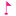
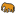
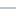
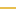

<!doctype html>
<html lang="en">
    <head>
        <meta charset="utf-8">
        <meta http-equiv="X-UA-Compatible" content="IE=edge">
        <meta name="viewport" content="initial-scale=1,user-scalable=no,maximum-scale=1,width=device-width">
        <meta name="mobile-web-app-capable" content="yes">
        <meta name="apple-mobile-web-app-capable" content="yes">
        <link rel="stylesheet" href="css/leaflet.css"><link rel="stylesheet" href="css/L.Control.Locate.min.css">
        <link rel="stylesheet" href="css/qgis2web.css"><link rel="stylesheet" href="css/fontawesome-all.min.css">
        <link rel="stylesheet" href="css/MarkerCluster.css">
        <link rel="stylesheet" href="css/MarkerCluster.Default.css">
        <link rel="stylesheet" href="css/leaflet-control-geocoder.Geocoder.css">
        <style>
        html, body, #map {
            width: 100%;
            height: 100%;
            padding: 0;
            margin: 0;
        }
        </style>
        <title></title>
    </head>
    <body>
        <div id="map">
        </div>
        <script src="js/qgis2web_expressions.js"></script>
        <script src="js/leaflet.js"></script><script src="js/L.Control.Locate.min.js"></script>
        <script src="js/leaflet.rotatedMarker.js"></script>
        <script src="js/leaflet.pattern.js"></script>
        <script src="js/leaflet-hash.js"></script>
        <script src="js/Autolinker.min.js"></script>
        <script src="js/rbush.min.js"></script>
        <script src="js/labelgun.min.js"></script>
        <script src="js/labels.js"></script>
        <script src="js/leaflet-control-geocoder.Geocoder.js"></script>
        <script src="js/leaflet.markercluster.js"></script>
        <script src="data/Ecosistemas_0.js"></script>
        <script src="data/Corregimientos_1.js"></script>
        <script src="data/Barrios_2.js"></script>
        <script src="data/Comunas_3.js"></script>
        <script src="data/Ros_4.js"></script>
        <script src="data/FallasGeolgicas_5.js"></script>
        <script src="data/JerarquizacinVial_6.js"></script>
        <script src="data/RecursoMinero_7.js"></script>
        <script src="data/LocalizacinEspecies_8.js"></script>
        <script src="data/SitiosdeInters_9.js"></script>
        <script>
        var map = L.map('map', {
            zoomControl:true, maxZoom:28, minZoom:1
        })
        var hash = new L.Hash(map);
        map.attributionControl.setPrefix('<a href="https://github.com/tomchadwin/qgis2web" target="_blank">qgis2web</a> &middot; <a href="https://leafletjs.com" title="A JS library for interactive maps">Leaflet</a> &middot; <a href="https://qgis.org">QGIS</a>');
        var autolinker = new Autolinker({truncate: {length: 30, location: 'smart'}});
        L.control.locate({locateOptions: {maxZoom: 19}}).addTo(map);
        var bounds_group = new L.featureGroup([]);
        function setBounds() {
            if (bounds_group.getLayers().length) {
                map.fitBounds(bounds_group.getBounds());
            }
        }

        var mapaBase = L.tileLayer('http://{s}.tile.openstreetmap.org/{z}/{x}/{y}.png', {maxZoom: 18}).addTo(map);

        function pop_Ecosistemas_0(feature, layer) {
            var popupContent = '<table>\
                    <tr>\
                        <th scope="row">Litología</th>\
                        <td>' + (feature.properties['LITOLOGIA'] !== null ? autolinker.link(feature.properties['LITOLOGIA'].toLocaleString()) : '') + '</td>\
                    </tr>\
                    <tr>\
                        <th scope="row">Bioma</th>\
                        <td>' + (feature.properties['BIOMA2010'] !== null ? autolinker.link(feature.properties['BIOMA2010'].toLocaleString()) : '') + '</td>\
                    </tr>\
                    <tr>\
                        <th scope="row">Ecosistema</th>\
                        <td>' + (feature.properties['NOM_ECOSIS'] !== null ? autolinker.link(feature.properties['NOM_ECOSIS'].toLocaleString()) : '') + '</td>\
                    </tr>\
                    <tr>\
                        <th scope="row">Cuenca Hidrográfica</th>\
                        <td>' + (feature.properties['NOM_CUENCA'] !== null ? autolinker.link(feature.properties['NOM_CUENCA'].toLocaleString()) : '') + '</td>\
                    </tr>\
                </table>';
            layer.bindPopup(popupContent, {maxHeight: 400});
        }

        function style_Ecosistemas_0_0() {
            return {
                pane: 'pane_Ecosistemas_0',
                opacity: 1,
                color: 'rgba(40,108,38,1.0)',
                dashArray: '',
                lineCap: 'butt',
                lineJoin: 'miter',
                weight: 1.0, 
                fill: true,
                fillOpacity: 1,
                fillColor: 'rgba(77,175,74,1.0)',
                interactive: true,
            }
        }
        map.createPane('pane_Ecosistemas_0');
        map.getPane('pane_Ecosistemas_0').style.zIndex = 400;
        map.getPane('pane_Ecosistemas_0').style['mix-blend-mode'] = 'normal';
        var layer_Ecosistemas_0 = new L.geoJson(json_Ecosistemas_0, {
            attribution: '',
            interactive: true,
            dataVar: 'json_Ecosistemas_0',
            layerName: 'layer_Ecosistemas_0',
            pane: 'pane_Ecosistemas_0',
            onEachFeature: pop_Ecosistemas_0,
            style: style_Ecosistemas_0_0,
        });
        bounds_group.addLayer(layer_Ecosistemas_0);
        function pop_Corregimientos_1(feature, layer) {
            var popupContent = '<table>\
                    <tr>\
                        <th scope="row">Corregimiento</th>\
                        <td>' + (feature.properties['CORREGIMIE'] !== null ? autolinker.link(feature.properties['CORREGIMIE'].toLocaleString()) : '') + '</td>\
                    </tr>\
                    <tr>\
                        <th scope="row">Área</th>\
                        <td>' + (feature.properties['AREA'] !== null ? autolinker.link(feature.properties['AREA'].toLocaleString()) : '') + '</td>\
                    </tr>\
                </table>';
            layer.bindPopup(popupContent, {maxHeight: 400});
        }

        function style_Corregimientos_1_0() {
            return {
                pane: 'pane_Corregimientos_1',
                opacity: 1,
                color: 'rgba(0,0,0,1.0)',
                dashArray: '',
                lineCap: 'square',
                lineJoin: 'bevel',
                weight: 1.0,
                fillOpacity: 0,
                interactive: true,
            }
        }
        map.createPane('pane_Corregimientos_1');
        map.getPane('pane_Corregimientos_1').style.zIndex = 401;
        map.getPane('pane_Corregimientos_1').style['mix-blend-mode'] = 'normal';
        var layer_Corregimientos_1 = new L.geoJson(json_Corregimientos_1, {
            attribution: '',
            interactive: true,
            dataVar: 'json_Corregimientos_1',
            layerName: 'layer_Corregimientos_1',
            pane: 'pane_Corregimientos_1',
            onEachFeature: pop_Corregimientos_1,
            style: style_Corregimientos_1_0,
        });
        bounds_group.addLayer(layer_Corregimientos_1);
        map.addLayer(layer_Corregimientos_1);
        function pop_Barrios_2(feature, layer) {
            var popupContent = '<table>\
                    <tr>\
                        <th scope="row">Barrio</th>\
                        <td>' + (feature.properties['BARRIO'] !== null ? autolinker.link(feature.properties['BARRIO'].toLocaleString()) : '') + '</td>\
                    </tr>\
                    <tr>\
                        <th scope="row">Comuna</th>\
                        <td>' + (feature.properties['COMUNA'] !== null ? autolinker.link(feature.properties['COMUNA'].toLocaleString()) : '') + '</td>\
                    </tr>\
                    <tr>\
                        <th scope="row">Estrato</th>\
                        <td>' + (feature.properties['ESTRA_MODA'] !== null ? autolinker.link(feature.properties['ESTRA_MODA'].toLocaleString()) : '') + '</td>\
                    </tr>\
                </table>';
            layer.bindPopup(popupContent, {maxHeight: 400});
        }

        function style_Barrios_2_0() {
            return {
                pane: 'pane_Barrios_2',
                opacity: 1,
                color: 'rgba(247,247,247,1.0)',
                dashArray: '',
                lineCap: 'butt',
                lineJoin: 'miter',
                weight: 1.0, 
                fill: true,
                fillOpacity: 1,
                fillColor: 'rgba(150,150,150,1.0)',
                interactive: true,
            }
        }
        map.createPane('pane_Barrios_2');
        map.getPane('pane_Barrios_2').style.zIndex = 402;
        map.getPane('pane_Barrios_2').style['mix-blend-mode'] = 'normal';
        var layer_Barrios_2 = new L.geoJson(json_Barrios_2, {
            attribution: '',
            interactive: true,
            dataVar: 'json_Barrios_2',
            layerName: 'layer_Barrios_2',
            pane: 'pane_Barrios_2',
            onEachFeature: pop_Barrios_2,
            style: style_Barrios_2_0,
        });
        bounds_group.addLayer(layer_Barrios_2);
        function pop_Comunas_3(feature, layer) {
            var popupContent = '<table>\
                    <tr>\
                        <th scope="row">Comuna</th>\
                        <td>' + (feature.properties['COMUNA'] !== null ? autolinker.link(feature.properties['COMUNA'].toLocaleString()) : '') + '</td>\
                    </tr>\
                </table>';
            layer.bindPopup(popupContent, {maxHeight: 400});
        }

        function style_Comunas_3_0() {
            return {
                pane: 'pane_Comunas_3',
                opacity: 1,
                color: 'rgba(127,35,177,1.0)',
                dashArray: '',
                lineCap: 'square',
                lineJoin: 'bevel',
                weight: 1.0,
                fillOpacity: 0,
                interactive: true,
            }
        }
        map.createPane('pane_Comunas_3');
        map.getPane('pane_Comunas_3').style.zIndex = 403;
        map.getPane('pane_Comunas_3').style['mix-blend-mode'] = 'normal';
        var layer_Comunas_3 = new L.geoJson(json_Comunas_3, {
            attribution: '',
            interactive: true,
            dataVar: 'json_Comunas_3',
            layerName: 'layer_Comunas_3',
            pane: 'pane_Comunas_3',
            onEachFeature: pop_Comunas_3,
            style: style_Comunas_3_0,
        });
        bounds_group.addLayer(layer_Comunas_3);
        map.addLayer(layer_Comunas_3);
        function pop_Ros_4(feature, layer) {
            var popupContent = '<table>\
                    <tr>\
                        <th scope="row">Nombre</th>\
                        <td>' + (feature.properties['NOMBRE'] !== null ? autolinker.link(feature.properties['NOMBRE'].toLocaleString()) : '') + '</td>\
                    </tr>\
                </table>';
            layer.bindPopup(popupContent, {maxHeight: 400});
        }

        function style_Ros_4_0() {
            return {
                pane: 'pane_Ros_4',
                opacity: 1,
                color: 'rgba(38,89,128,1.0)',
                dashArray: '',
                lineCap: 'butt',
                lineJoin: 'miter',
                weight: 1.0, 
                fill: true,
                fillOpacity: 1,
                fillColor: 'rgba(55,126,184,1.0)',
                interactive: true,
            }
        }
        map.createPane('pane_Ros_4');
        map.getPane('pane_Ros_4').style.zIndex = 404;
        map.getPane('pane_Ros_4').style['mix-blend-mode'] = 'normal';
        var layer_Ros_4 = new L.geoJson(json_Ros_4, {
            attribution: '',
            interactive: true,
            dataVar: 'json_Ros_4',
            layerName: 'layer_Ros_4',
            pane: 'pane_Ros_4',
            onEachFeature: pop_Ros_4,
            style: style_Ros_4_0,
        });
        bounds_group.addLayer(layer_Ros_4);
        map.addLayer(layer_Ros_4);
        function pop_FallasGeolgicas_5(feature, layer) {
            var popupContent = '<table>\
                    <tr>\
                        <th scope="row">Estructura</th>\
                        <td>' + (feature.properties['NOM_ESTRUC'] !== null ? autolinker.link(feature.properties['NOM_ESTRUC'].toLocaleString()) : '') + '</td>\
                    </tr>\
                </table>';
            layer.bindPopup(popupContent, {maxHeight: 400});
        }

        function style_FallasGeolgicas_5_0() {
            return {
                pane: 'pane_FallasGeolgicas_5',
                opacity: 1,
                color: 'rgba(229,182,54,1.0)',
                dashArray: '',
                lineCap: 'square',
                lineJoin: 'bevel',
                weight: 2.0,
                fillOpacity: 0,
                interactive: true,
            }
        }
        map.createPane('pane_FallasGeolgicas_5');
        map.getPane('pane_FallasGeolgicas_5').style.zIndex = 405;
        map.getPane('pane_FallasGeolgicas_5').style['mix-blend-mode'] = 'normal';
        var layer_FallasGeolgicas_5 = new L.geoJson(json_FallasGeolgicas_5, {
            attribution: '',
            interactive: true,
            dataVar: 'json_FallasGeolgicas_5',
            layerName: 'layer_FallasGeolgicas_5',
            pane: 'pane_FallasGeolgicas_5',
            onEachFeature: pop_FallasGeolgicas_5,
            style: style_FallasGeolgicas_5_0,
        });
        bounds_group.addLayer(layer_FallasGeolgicas_5);
        function pop_JerarquizacinVial_6(feature, layer) {
            var popupContent = '<table>\
                    <tr>\
                        <th scope="row">Tipo de Vía</th>\
                        <td>' + (feature.properties['tipo_via'] !== null ? autolinker.link(feature.properties['tipo_via'].toLocaleString()) : '') + '</td>\
                    </tr>\
                    <tr>\
                        <th scope="row">Estado de Vía</th>\
                        <td>' + (feature.properties['estado_act'] !== null ? autolinker.link(feature.properties['estado_act'].toLocaleString()) : '') + '</td>\
                    </tr>\
                </table>';
            layer.bindPopup(popupContent, {maxHeight: 400});
        }

        function style_JerarquizacinVial_6_0() {
            return {
                pane: 'pane_JerarquizacinVial_6',
                opacity: 1,
                color: 'rgba(155,168,182,1.0)',
                dashArray: '',
                lineCap: 'square',
                lineJoin: 'bevel',
                weight: 1.0,
                fillOpacity: 0,
                interactive: true,
            }
        }
        map.createPane('pane_JerarquizacinVial_6');
        map.getPane('pane_JerarquizacinVial_6').style.zIndex = 406;
        map.getPane('pane_JerarquizacinVial_6').style['mix-blend-mode'] = 'normal';
        var layer_JerarquizacinVial_6 = new L.geoJson(json_JerarquizacinVial_6, {
            attribution: '',
            interactive: true,
            dataVar: 'json_JerarquizacinVial_6',
            layerName: 'layer_JerarquizacinVial_6',
            pane: 'pane_JerarquizacinVial_6',
            onEachFeature: pop_JerarquizacinVial_6,
            style: style_JerarquizacinVial_6_0,
        });
        bounds_group.addLayer(layer_JerarquizacinVial_6);
        function pop_RecursoMinero_7(feature, layer) {
            var popupContent = '<table>\
                    <tr>\
                        <th scope="row">Nombre Recurso Minero</th>\
                        <td>' + (feature.properties['NOM_REC_MI'] !== null ? autolinker.link(feature.properties['NOM_REC_MI'].toLocaleString()) : '') + '</td>\
                    </tr>\
                    <tr>\
                        <th scope="row">Propietario</th>\
                        <td>' + (feature.properties['PROPIETARI'] !== null ? autolinker.link(feature.properties['PROPIETARI'].toLocaleString()) : '') + '</td>\
                    </tr>\
                </table>';
            layer.bindPopup(popupContent, {maxHeight: 400});
        }

        function style_RecursoMinero_7_0() {
            return {
                pane: 'pane_RecursoMinero_7',
        rotationAngle: 0.0,
        rotationOrigin: 'center center',
        icon: L.icon({
            iconUrl: 'markers/poi_mine.svg',
            iconSize: [13.68, 13.68]
        }),
                interactive: true,
            }
        }
        map.createPane('pane_RecursoMinero_7');
        map.getPane('pane_RecursoMinero_7').style.zIndex = 407;
        map.getPane('pane_RecursoMinero_7').style['mix-blend-mode'] = 'normal';
        var layer_RecursoMinero_7 = new L.geoJson(json_RecursoMinero_7, {
            attribution: '',
            interactive: true,
            dataVar: 'json_RecursoMinero_7',
            layerName: 'layer_RecursoMinero_7',
            pane: 'pane_RecursoMinero_7',
            onEachFeature: pop_RecursoMinero_7,
            pointToLayer: function (feature, latlng) {
                var context = {
                    feature: feature,
                    variables: {}
                };
                return L.marker(latlng, style_RecursoMinero_7_0(feature));
            },
        });
        bounds_group.addLayer(layer_RecursoMinero_7);
        function pop_LocalizacinEspecies_8(feature, layer) {
            var popupContent = '<table>\
                    <tr>\
                        <th scope="row">Hábitat</th>\
                        <td>' + (feature.properties['HABITAT'] !== null ? autolinker.link(feature.properties['HABITAT'].toLocaleString()) : '') + '</td>\
                    </tr>\
                    <tr>\
                        <th scope="row">Corregimiento</th>\
                        <td>' + (feature.properties['CORREGIMIE'] !== null ? autolinker.link(feature.properties['CORREGIMIE'].toLocaleString()) : '') + '</td>\
                    </tr>\
                    <tr>\
                        <th scope="row">Cuenca Hidrográfica</th>\
                        <td>' + (feature.properties['CUENCA'] !== null ? autolinker.link(feature.properties['CUENCA'].toLocaleString()) : '') + '</td>\
                    </tr>\
                    <tr>\
                        <th scope="row">Área Protegida</th>\
                        <td>' + (feature.properties['AREA_PROTE'] !== null ? autolinker.link(feature.properties['AREA_PROTE'].toLocaleString()) : '') + '</td>\
                    </tr>\
                </table>';
            layer.bindPopup(popupContent, {maxHeight: 400});
        }

        function style_LocalizacinEspecies_8_0() {
            return {
                pane: 'pane_LocalizacinEspecies_8',
        rotationAngle: 0.0,
        rotationOrigin: 'center center',
        icon: L.icon({
            iconUrl: 'markers/tourist_zoo.svg',
            iconSize: [15.2, 15.2]
        }),
                interactive: true,
            }
        }
        map.createPane('pane_LocalizacinEspecies_8');
        map.getPane('pane_LocalizacinEspecies_8').style.zIndex = 408;
        map.getPane('pane_LocalizacinEspecies_8').style['mix-blend-mode'] = 'normal';
        var layer_LocalizacinEspecies_8 = new L.geoJson(json_LocalizacinEspecies_8, {
            attribution: '',
            interactive: true,
            dataVar: 'json_LocalizacinEspecies_8',
            layerName: 'layer_LocalizacinEspecies_8',
            pane: 'pane_LocalizacinEspecies_8',
            onEachFeature: pop_LocalizacinEspecies_8,
            pointToLayer: function (feature, latlng) {
                var context = {
                    feature: feature,
                    variables: {}
                };
                return L.marker(latlng, style_LocalizacinEspecies_8_0(feature));
            },
        });
        var cluster_LocalizacinEspecies_8 = new L.MarkerClusterGroup({showCoverageOnHover: false,
            spiderfyDistanceMultiplier: 2});
        cluster_LocalizacinEspecies_8.addLayer(layer_LocalizacinEspecies_8);

        bounds_group.addLayer(layer_LocalizacinEspecies_8);
        function pop_SitiosdeInters_9(feature, layer) {
            var popupContent = '<table>\
                    <tr>\
                        <th scope="row">Nombre</th>\
                        <td>' + (feature.properties['NOMBRE'] !== null ? autolinker.link(feature.properties['NOMBRE'].toLocaleString()) : '') + '</td>\
                    </tr>\
                    <tr>\
                        <th scope="row">Dirección</th>\
                        <td>' + (feature.properties['UBICACION'] !== null ? autolinker.link(feature.properties['UBICACION'].toLocaleString()) : '') + '</td>\
                    </tr>\
                    <tr>\
                        <th scope="row">Tipo</th>\
                        <td>' + (feature.properties['TIPO'] !== null ? autolinker.link(feature.properties['TIPO'].toLocaleString()) : '') + '</td>\
                    </tr>\
                    <tr>\
                        <th scope="row">Barrio</th>\
                        <td>' + (feature.properties['BARRIO'] !== null ? autolinker.link(feature.properties['BARRIO'].toLocaleString()) : '') + '</td>\
                    </tr>\
                </table>';
            layer.bindPopup(popupContent, {maxHeight: 400});
        }

        function style_SitiosdeInters_9_0() {
            return {
                pane: 'pane_SitiosdeInters_9',
        rotationAngle: 0.0,
        rotationOrigin: 'center center',
        icon: L.icon({
            iconUrl: 'markers/flag.svg',
            iconSize: [15.2, 15.2]
        }),
                interactive: true,
            }
        }
        map.createPane('pane_SitiosdeInters_9');
        map.getPane('pane_SitiosdeInters_9').style.zIndex = 409;
        map.getPane('pane_SitiosdeInters_9').style['mix-blend-mode'] = 'normal';
        var layer_SitiosdeInters_9 = new L.geoJson(json_SitiosdeInters_9, {
            attribution: '',
            interactive: true,
            dataVar: 'json_SitiosdeInters_9',
            layerName: 'layer_SitiosdeInters_9',
            pane: 'pane_SitiosdeInters_9',
            onEachFeature: pop_SitiosdeInters_9,
            pointToLayer: function (feature, latlng) {
                var context = {
                    feature: feature,
                    variables: {}
                };
                return L.marker(latlng, style_SitiosdeInters_9_0(feature));
            },
        });
        var cluster_SitiosdeInters_9 = new L.MarkerClusterGroup({showCoverageOnHover: false,
            spiderfyDistanceMultiplier: 2});
        cluster_SitiosdeInters_9.addLayer(layer_SitiosdeInters_9);

        bounds_group.addLayer(layer_SitiosdeInters_9);
        var osmGeocoder = new L.Control.Geocoder({
            collapsed: true,
            position: 'topleft',
            text: 'Search',
            title: 'Testing'
        }).addTo(map);
        document.getElementsByClassName('leaflet-control-geocoder-icon')[0]
        .className += ' fa fa-search';
        document.getElementsByClassName('leaflet-control-geocoder-icon')[0]
        .title += 'Search for a place';
        var baseMaps = {};
        L.control.layers(baseMaps,{' Sitios de Interés': cluster_SitiosdeInters_9,' Localización Especies': cluster_LocalizacinEspecies_8,' Recurso Minero': layer_RecursoMinero_7,' Jerarquización Vial': layer_JerarquizacinVial_6,' Fallas Geológicas': layer_FallasGeolgicas_5,' Ríos': layer_Ros_4,' Comunas': layer_Comunas_3,' Barrios': layer_Barrios_2,' Corregimientos': layer_Corregimientos_1,' Ecosistemas': layer_Ecosistemas_0,}).addTo(map);
        setBounds();
        var i = 0;
        layer_Corregimientos_1.eachLayer(function(layer) {
            var context = {
                feature: layer.feature,
                variables: {}
            };
            layer.bindTooltip((layer.feature.properties['CORREGIMIE'] !== null?String('<div style="color: #323232; font-size: 10pt; font-family: \'Arial\', sans-serif;">' + layer.feature.properties['CORREGIMIE']) + '</div>':''), {permanent: true, offset: [-0, -16], className: 'css_Corregimientos_1'});
            labels.push(layer);
            totalMarkers += 1;
              layer.added = true;
              addLabel(layer, i);
              i++;
        });
        resetLabels([layer_Corregimientos_1,layer_Ros_4]);
        map.on("zoomend", function(){
            resetLabels([layer_Corregimientos_1,layer_Ros_4]);
        });
        map.on("layeradd", function(){
            resetLabels([layer_Corregimientos_1,layer_Ros_4]);
        });
        map.on("layerremove", function(){
            resetLabels([layer_Corregimientos_1,layer_Ros_4]);
        });
        </script>
    </body>
</html>
